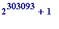
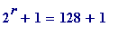
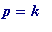
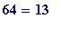

> # Fermat.mws
Speaker
: Dr. John Cosgrave.
Address
: Mathematics Department, St. Patrick's College,
Drumcondra, Dublin 9, IRELAND.
e-mail
: John.Cosgrave@spd.ie (College) or
johnbcos@iol.ie (Home)
Web
: <http://www.spd.dcu.ie/johnbcos>
Title of talk
(given on Tuesday 10th. August 1999 in Plymouth University, Devon, England):
The mathematical context of the
recent (25th. July 1999) discovery of the
largest known composite Fermat number
Note
. The Maple file of this talk, and many other Maple worksheets
- 1st. year Maple/Calculus/Analysis
- 2nd year Number Theory
- 3rd year Number Theory and Cryptography
-
some public lectures
together with course notes, examination papers (written and Maple lab), may be accessed at my Web site.
Dedication .
I dedicate this talk to the French scientist Yves Gallot (Toulouse),
and the German mathematician Wilfrid Keller (Hamburg)
Structure of my talk [All the standard mathematical ideas presented in this talk are treated in my
undergraduate courses with my students in St. Patrick's College, Drumcondra. Most of my students
are taking the B.Ed. degree, with a view to becoming primary school teachers in Ireland.]
- Events of past couple of weeks, starting 5.00 P.M. Friday 23rd. July 1999.
- Euclid and perfect numbers.
-
Mersenne primes. [these last two sections are intended
only
to provide
the historical background to Fermat's question coming up next.] - Fermat numbers made their first appearance in August 1640 . Fermat's belief.
-
Fermat-Euler theorem (1732).
Euler's discovery that = is composite.
Landry (1880), Brillhart and Morrison (1970), Morehead (190?) - I don't have Dickson's History
to hand to give the correct date) - Pepin's theorem (1877)
-
The current state of knowledge,
Proth's theorem of 1878, and
Yves Gallot's remarkable Proth.exe program -
Web site references
Dear Friends and colleagues,
I am delighted to inform you that using Yves Gallot's Proth program I have just found the
10th. largest known prime
(and a new Irish prime record into the bargain). The prime is:
3*
,
and it has 115130 digits.
All the credit goes to Proth (1878, whose theorem I teach to my 3rd. years), to Gallot for his
remarkable program, and to my College for computer access during the slack Summer period.
I have put up a brief note about it on my web site (<www.spd.dcu.ie/johnbcos>).
Then, two days later , on the evening of Sunday 25th. August I sent out the following much more
exciting announcement:
ANNOUNCING THE LARGEST KNOWN COMPOSITE FERMAT NUMBER
Dear Friends and colleagues,
Using Yves Gallot's remarkable Proth program I have made the fortuitous discoveries that:
1.
*
 is
prime
(the 10th. largest known one, and the
is
prime
(the 10th. largest known one, and the
3rd. largest non-Mersenne prime),
2.
p
is a divisor of the
Fermat number
making
 be the
largest known composite Fermat number
, and the sixth
be the
largest known composite Fermat number
, and the sixth
[added later: its actually the 7th.] Fermat number for which a factor has been found
using Gallot's program.
3.
p
is a divisor of the following 'generalized Fermat numbers' (GFN's):
,
,
,
4.
p
is
not
a divisor of
any
nor
of
any
,
5.
p
is a 'generalized Cullen prime.'
Previously the largest known composite Fermat number was
, with prime 3*

[Jeff Young, 1998]
I made my chance discovery while making a systematic Proth-Gallot test of all numbers
3*
 , with '
n
' ranging between 366,000 and 390,000, spread over 40-50 machines in
, with '
n
' ranging between 366,000 and 390,000, spread over 40-50 machines in
my College's main computer laboratory, during the past two months.
Best wishes to you all, John
REFERENCES
1. Wilfrid Keller maintains the 'Prime factors k*2^n + 1 of Fermat
numbers F[m] and complete factoring status' site at:
<http://vamri.xray.ufl.edu/proths/fermat.html>
2. Ray Ballinger valiantly maintains the Proth prime search site at:
<http://vamri.xray.ufl.edu/proths/>
3. Chris Caldwell maintains [just in case you didn't know] the
remarkable Prime number site at:
<http://www.utm.edu/research/primes>
Much more detail concerning the story and timing of the discovery may
be seen at my College we site, including a simple analysis showing that
the supra-astronomically large number
![F[382447] = 2^(2^382447)+1](images/Plymouth99Fermat16.gif)
has
- approximately digits
-
would require a square board of side length approximately
LIGHT YEARS
in order
to write it out in decimal notation at 4 digits per inch
Return to Structure of my talk
Euclid and perfect numbers (briefly!) [Much greater detail may be viewed in one of my Maple
public lectures, given in October 1997, available at my web site.]
Recall that a perfect number is one whose sum of factors - excluding itself - is equal to itself.
Examples
- 6 is perfect, because the factors of 6 are 1, 2, 3 and 6, and .
- 28 is perfect, because the factors of 28 are 1, 2, 4, 7, 14 and 28, and
-
496 is perfect, because the factors of 496 are 1, 2, 4, 8, 16, 31, 62, 124, 248 and 496, and
Euclid's great discovery (and one to which students may easily be led) was
: Let
be a natural number
such that (
 ) is a prime number, then the number
is a perfect number.
) is a prime number, then the number
is a perfect number.
Examples .
- is prime, and thus the number * , is perfect
-
is prime, and thus the number
*
= 33,550,336,
is perfect
> isprime(2^13 - 1);

> 2^12*(2^13-1);
>
Historical (historic, and unsolved) question
: For which values of
 is (
is (
 ) prime?
) prime?
Some partial answers .
-
If
n
is composite (i.e., is not prime)
then
(
 ) is also composite,
) is also composite,
and - as a consequence -
- if ( ) is prime, then n is prime.
Warning
. It is
not true
that
-
if
n
is prime then
(
 ) is prime
) is prime
Examples . Note that 11, 23 and 29 are all prime, but:
> isprime(2^11 - 1);

> ifactor(2^11 - 1);
>
> isprime(2^23 - 1);

> ifactor(2^23 - 1);
>
> isprime(2^29 - 1);

> ifactor(2^29 - 1);
>
Return to Structure of my talk
Definitions.
-
Let
p
be prime, then
![M[p] = 2^p-1](images/Plymouth99Fermat44.gif) , is the
Mersenne
number
, is the
Mersenne
number
formed from the prime p . -
Let
p
be prime; if
is prime, then it is said to be
a Mersenne prime.
>
Mersenne := proc(n1, n2) local p;
for p from n1 to n2 do
if isprime(p) and isprime(2^p - 1)
then print(p, 2^p - 1) fi od end:
>
> Mersenne(2, 100);
>
WARNING . Do not fall into the trap of thinking that you can find big Mersenne primes using
this ... !! I am attempting to avoid straying into very, very deep waters.
Return to Structure of my talk
Fermat numbers . Whereas Mersenne primes (primes that are a power of 2, minus 1) had
their origin is a question asked in the 3rd. century B.C. (and earlier), Fermat primes/numbers
had their origin in 1640.
Pierre de Fermat (1601-1665 , and the ' father of modern Number Theory ') - a contemporary
and correspondent of Mersenne's - asked himself this apparently simple question , sometime
in the Summer of 1640:
-
Which primes are a power of 2,
plus
1? That is, for which values of
r
(
...)
is ( ) a prime?
) a prime?
School children, students, anyone, may easily check by hand that:
- When , = 3, is prime
-
When
,
 = 5,
is
prime
= 5,
is
prime
- When , = 9 = 3*3, is not prime
- When , = 17, is prime
- When , = 33 = 3*11, is not prime
- When , = 65 = 5*13, is not prime
- When ,  = 129 = 3*43, is not prime
- When , = 257, is prime
At this point (and this has always been my experience, over many years, with my own students)
any numerically sensitive person will immediately leap to the guesses / questions :
-
Is (
) composite when
r
is not
a power of 2? [Here the answer is a simple '
yes
,' and it is
an elementary exercise to prove it.] -
Is (
 ) prime when r
is
a power of 2? That is, letting
) prime when r
is
a power of 2? That is, letting
![F[m] = 2^(2^m)+1](images/Plymouth99Fermat66.gif) (
, ... )
(
, ... )
be the m -th Fermat number, is it true that![F[m]](images/Plymouth99Fermat68.gif) is prime for all
is prime for all
 ?
?
In a letter to Frenicle of August 1640 (and another of October 1640; both letters available - in French -
at Antreas P. Hatzipolakis's we site: <http://users.hol.gr/~xpolakis/fermat/fac.html>) Fermat wrote as
follows (English translation quoted from M.S.Mahoney's The Mathematical Career of Pierre de Fermat ,
Princeton University Press, 2nd edition, 1994; see also Andre Weil's Number Theory ( An approach through
history ), Birkhauser, 1984):
But here is what I admire most of all: it is that I am just about convinced that all progressive numbers
augmented by unity, of which the exponents are numbers of the double progression, are prime numbers,
such as
3, 5, 17, 257, 65537, 4294967297
and the following of twenty digits
18446744073709551617, etc.
I do not have an exact proof of it, but I have excluded such a large quantity of divisors by infallible
demonstrations, and my thoughts rest on such clear insights, that I can hardly be mistaken.
Fermat returned to this question over and over again in the remaining 25 years of his life, and when he
died in January 1665 he could not - perhaps - have imagined that all would change quite dramatically in
the following century... .
Return to Structure of my talk
Briefly this theorem (which lies unproved in the work of Fermat - and has its origins in Fermat's studies
of which primes may be the hypothenuse of an integer sided right angled triangle...) states this:
Let m be any natural number, and x be any integer, then every odd prime divisor p of the integer
(
 ) leaves remainder 1 when divided by
) leaves remainder 1 when divided by
 .
.
In other words, every odd prime divisor p of the integer ( ) must have the following structure :
 * ,
for some , ...
Examples :
> m := 4; # and so (m+1) is 5
> 2^m;
> 2^(m+1);
> x := 5;
> x^(2^m) + 1;
> ifactor(x^(2^m) + 1);
> 2593 mod 2^(m+1);

> 29423041 mod 2^(m+1);

>
What Euler did (actually Andre Weil is of the view (which I am in sympathy) that Fermat himself
also did this - using his unproven discovery - but made an arithmetical error) was to attempt to find
a factor of:
![F[5] = 2^(2^5)+1](images/Plymouth99Fermat84.gif) =
=
by using the proved result that any prime factor
p
of
 must be of the form:
must be of the form:
(some , ... )
and, when he got up to
he found that
*
is a proper factor of
 :
:
> F := m -> 2^(2^m) + 1; # defining the FUNCTION 'F'
> F(5);

> F(5)/641;
> ifactor(F(5));
>
and in the following century, Landry (in 1880, and at the age of 82!) found a proper factor of:
=
> F(6);
> ifactor(F(6));
>
Warning
. I am
not
going to use Maple to
attempt
to factor
:
> F(7);
>
because that number
was only factored as recently as 1970
-
it has the following prime factorization:
= (
*
 )*(
*
)
)*(
*
)
and it was only possible to do so because of a very great theoretical advance, made that year,
due to Brillhart and Morrison .
> p1 := 116503103764643*2^9 + 1;
> isprime(p1);

> p2 := 11141971095088142685*2^9 + 1;

> isprime(p2);
> N := p1*p2;
> is(F(7) = N);

>
However, in 1970 it had
already been known
from the first decade of this century that
 is
composite!!
is
composite!!
Return to Structure of my talk
Question . (leading to Pepin's theorem )
-
How
was it possible to know at
an earlier time
(than 1970) that
![F[7]](images/Plymouth99Fermat115.gif) is composite?
is composite?
This brings us to
Pepin's remarkable theorem of 1877
:
is a prime if and only if the number
leaves remainder
when divided by
 .
.
That is,
 is a prime if and only if
is a prime if and only if
... (P)
for some integer .
Small hand performed example , by way of illustration :
Let
, then
=
= 17, and so
= ,
and dividing 6561 by 17 we get:
*
... [compare with P, above]
proving, by Pepin's theorem that = 17, is prime.
That small example was for illustration purposes only ; no one would seriously prove that 17 is prime
by appealing to Pepin's theorem!! However for larger values of
 , it really is a serious issue to decide
, it really is a serious issue to decide
the status of
 by using Pepin's theorem (though researchers are currently stuck on the case
).
by using Pepin's theorem (though researchers are currently stuck on the case
).
Here is the Maple command for that latter computation:
> mods(3^((F(2) - 1)/2), F(2));

> mods(3^((F(3) - 1)/2), F(3));

> mods(3^((F(4) - 1)/2), F(4));

>
Incidentally, let us just have a peek at the value of the number [which I OMIT in
the primted form to save space. remove the comment sign '#' before the command if
you wish to execute it]:
> # 3^((F(4) - 1)/2);
>
It is quite large! This computes how many digits it has:
> length(3^((F(4) - 1)/2));
>
Now let's do the Euler case, where :
> F(5);
>
But see what happens when we attempt to apply the Pepin theorem:
> mods(3^((F(5) - 1)/2), F(5));
Error, integer too large in context
>
So, is Maple useless, when we only get up to the modest sized
 ?
?
No!! Not at all. You see, what has happened above is that that Maple
was being asked to:
- First compute the actual value of the number ,
- and only then calculate its remainder on division by
However, by using a combination of two ideas from Number Theory - the method of congruences ,
and modular exponentiation (I teach such methods to my students, with applications to modern
Public-Key Cryptography - one can circumvent the difficulty caused by the above first step.
When those ideas are taken into account, there is a corresponding Maple command that now allows
one to return to the above computation, and in the process determine the nature of the 5th. Fermat number.
First, let us redo the earlier case:
> mods(3&^((F(4) - 1)/2), F(4));

>
and now let us re-view the case:
> mods(3&^((F(5) - 1)/2), F(5));
>
The fact that the '10324303' is
not
'
 ' proves - using Pepin's theorem - that
' proves - using Pepin's theorem - that
 is
not
prime.
is
not
prime.
> mods(3&^((F(6) - 1)/2), F(6));
> mods(3&^((F(7) - 1)/2), F(7));
> mods(3&^((F(8) - 1)/2), F(8));
> mods(3&^((F(9) - 1)/2), F(9));

> mods(3&^((F(10) - 1)/2), F(10));
>
>
Those computations establish that are all composite - a very
far cry from Fermat's belief that all 's are prime!!
Return to Structure of my talk
The current state of knowledge
re
Fermat numbers
. I mention
only some of the most important
:
-
The
only known
Fermat primes are the first five:
[the current orthodoxy is that these are the only Fermat primes.
I do not share that view, and would maintain that some work of
mine, from March of 1999, casts considerable doubt on this...]
-
![F[m]](images/Plymouth99Fermat161.gif) is
known to be composite
for all
with 4 <
is
known to be composite
for all
with 4 <
-
have
no known factors
-
The status of
is
completely unknown
(at least two research teams - led by very, very
big names in Computational Number Theory, Richard Crandall (Director of the Centre for
Advanced Scientific Computation, Oregon) and Richard Brent (Director of the National
Computing Laboratory, Australia, and presently in Oxford, England) - are working on this problem)
Francois Proth
(1852-1879), a self-taught French farmer, discovered and proved the following
theorem in 1878 (I teach it to my 3rd. year students, and notes about it are available form my web site):
leaves remainder
 on division by
on division by
 ,
,
in other words, if and only if
... (P')
for some integer
 .
.
Small hand performed example
(with
and
 ):
):
Let
= 3*
, then choosing
 we find that
we find that
= , and we have:
 * ... (compare with P' above)
and so, by Pepin's theorem,
 is prime.
is prime.
Return to Structure of my talk
Yves Gallot (Toulouse, France, where Fermat discovered the numbers that now bear his name)
has written a truly extraordinary program - named Proth.exe after Proth, whom Gallot holds in high
esteem (as I do too) - which incorporated Proth's theorem with a great new idea of the the past
twenty years - the Fast Fourier Transform (FFT).
Basically what his program does is this: it searches for primes p of the form:
and - whenever it finds such a prime p - it then tests to see if p divides
what one might call the associated Fermat number.
In particular, on finding the recent prime
 *
*
 , his program then proceeded to perform
, his program then proceeded to perform
the monumental computation that
p
is a factor of
![F[382447] = 2^(2^382447)+1](images/Plymouth99Fermat189.gif) .
.
I have prepared a simple Maple worksheet - available from my web site - showing that the number of
digits that
 has
approximately
digits, and would require a square board with side
has
approximately
digits, and would require a square board with side
length approximately LIGHT YEARS in order to write in decimal notation at 4
digits per inch, and even if one were to write the digits at digits per inch it would only bring the
side of the square down to (not a surprise) light years.
-
Yves Gallot's remarkable
Proth.exe
program may be downloaded from:
<http://perso.wanadoo.fr/yves.gallot/primes/gfn.html>
-
Dr. Ray Ballinger of the University of Florida valiantly maintains the Proth prime search site at:
<http://vamri.xray.ufl.edu/proths/>
-
The current complete factoring status re Fermat numbers is maintained by Dr. Wilfrid Keller
(who once - in 1984 - held the record for the largest known composite Fermat number; it was
then ) of Hamburg University at this site:
<http://vamri.xray.ufl.edu/proths/fermat.html>
-
For matters relating to primes in general one should look no further than Dr. Chris Caldwell's
monumental site at:
<http://www.utm.edu/research/primes/>
Return to Structure of my talk
Here, finally, is the above 115,130 digit prime [I have suppressed it in the PRINTED form to save space]:
> #p := 3*2^382449 + 1;
> length(p);
>